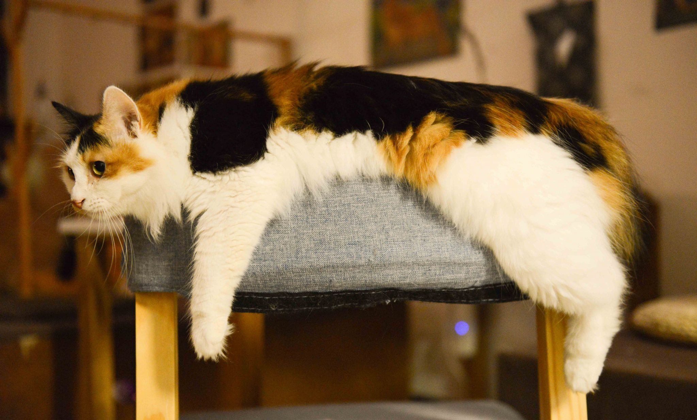
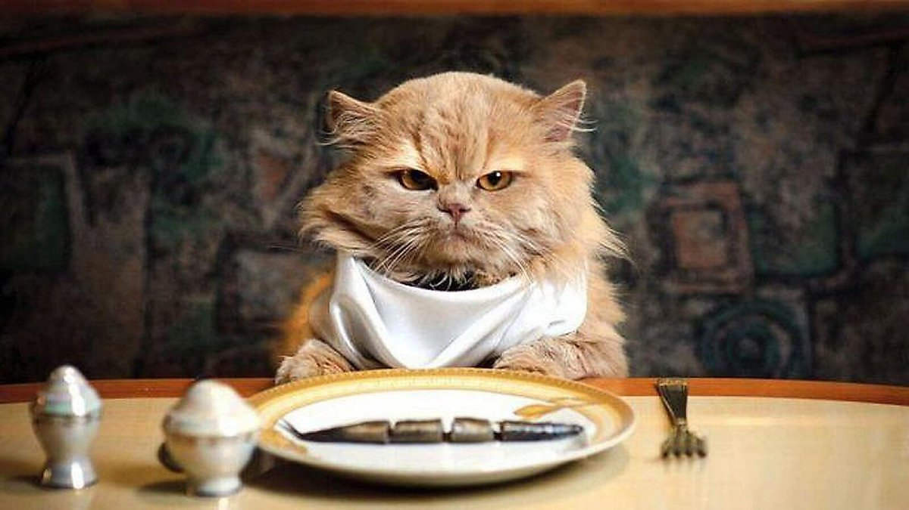

알쓸신잡
세상에 나쁜 고양이는 없다....

고양이 가이드
초보여도 괜찮아!

13살 이후

13세 이후 노년에 접어들게 되며 사람 나이로 환산했을 때 약 70세 정도 이상이 된다.
이 시기에는 고양이에게 치매가 올 수 있으며 배변실수를 하는 등의 행동을 한다. 몸의 움직임이 눈에 띄게 둔해지며 잠을 많이 자게 된다.
고양이 먹이
집사가 식습관의 변화를 제일 잘 체크해주셔야 하는 시기이다. 식용이 없거나 이상이 있다면 바로 병원으로 가보는 것이 좋다.
만약 건식사료 섭취에 어려움이 있다면 물에 불려주거나 습식 사료를 급여하고, 입맛이 없다면 따뜻하게 데워주거나 평소 좋아하는 간식을 갈아 섞어주는 것이 좋다.